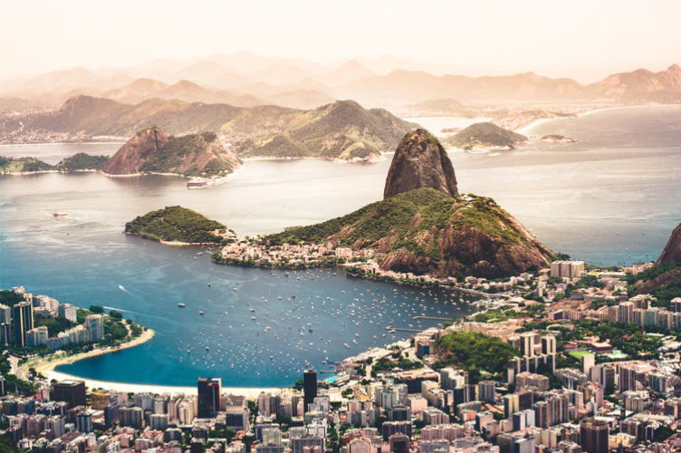

Rio de Janeiro
Pase un día experimentando las bellezas naturales de Río en un tour en barco con todo incluido. Después de que lo recojan en su hotel, viaje a un puerto deportivo y embarque en un bote a motor para navegar en aguas abiertas.
Explorarrio turism
Pase un día experimentando las bellezas naturales de Río en un tour en barco con todo incluido. Después de que lo recojan en su hotel, viaje a un puerto deportivo y embarque en un bote a motor para navegar en aguas abiertas.
Explorar
No hay duda de que Río de Janeiro es uno de los principales destinos turísticos del mundo y un centro turístico durante todo el año, pero ¿alguna vez se ha preguntado por qué la mayoría de los turistas están tan intoxicados con el sueño de visitar Río de Janeiro al menos una vez en un ¿toda la vida?
Bueno, porque esta ciudad rodeada de océanos y montañas es un lugar que ofrece una mezcla de experiencias contrastantes tanto para los viajeros aventureros como para los amantes de las vacaciones de lujo. Ahora vamos a sumergirnos en esas experiencias y lugares especiales que hacen que Río aparezca en la lista de deseos de todos.
Río de Janeiro está lleno de lugares coloridos que harán que sus ojos giren, y un destino perfecto como ese es el vívido mosaico Escaleras de Selarón, un lugar mágico en medio de una metrópoli. Las escaleras son la hermosa obra del artista chileno Jorge Selarón, quien vio el proyecto como su tributo a la ciudad y al pueblo brasileño. Transformó por completo el vecindario, convirtiéndolo de un área gris abandonada en un centro creativo para turistas.

El próximo destino que no querrá perderse durante su viaje en Río es la estatua del Cristo Redentor, una de las Nuevas Siete Maravillas del Mundo, que domina la ciudad desde la montaña Corcovado de 700 metros de altura. Para ver esta impresionante vista panorámica de Río, puede elegir la forma más cercana a su estilo de viaje: tomar un tren a través del bosque, caminar o tomar una camioneta hasta la cima.

Nada define mejor a Río que los ritmos de la samba. Cada año, justo antes de la Cuaresma, se lleva a cabo un festival masivo en Río, que reúne a dos millones de personas alrededor de la ciudad moviendo sus caderas bajo el ritmo rítmico de la samba. El Carnaval de Río de Janeiro tuvo lugar por primera vez en 1723 y, desde entonces, cada año, miles de personas vestidas con disfraces extravagantes se dirigen al bullicioso centro de la ciudad para comenzar sesiones espontáneas de improvisación de samba y participar en una serie de actividades culturales auténticas. Conociendo el amor de los brasileños por la música y la danza, no sorprende que este festival sea conocido oficialmente como la celebración de carnaval más grande no solo en Brasil sino en todo el mundo.

Una de las atracciones más bellas de Río de Janeiro y una de las más famosas de Brasil. Nuestra misión es llevar a las personas a un viaje de encanto, diversión y entretenimiento, brindando experiencias felices e inolvidables, además de valorar la cultura brasileña. Invertimos constantemente en seguridad, comodidad y tecnologías innovadoras. Nuestras locaciones constituyen hitos naturales, geológicos, históricos y turísticos de la ciudad de Río de Janeiro. Como hito natural, nos recuerda nuestra referencia a los marineros que vienen a la Bahía de Guanabara. Como hito geológico, nos recuerda nuestro sitio geológico que data precisamente de la historia de nuestro planeta. También hablamos de hito histórico porque el 1 de marzo de 1565, Estacio de Sa fundó la Ciudad de Sao Sebastiao en Río de Janeiro literalmente sobre sus pies. Y, finalmente, hito turístico porque el Teleférico inaugurado en el Pan de Azúcar proyectó el nombre de Brasil en todo el mundo.
